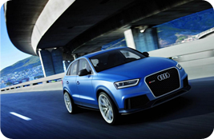

Audi Q3


It is a concept vehicle with Liquid Silver body colour, 20-inch wheels, fabric folding roof, electrically-controlled hood, 4-cylinder 2.0 TDI engine rated 204 PS (150 kW; 201 hp)
and 400 N·m (295.02 lbf·ft), diesel particulate filter and Bluetec emission control system, quattro permanent four-wheel drive system with Haldex clutch,
Audi S tronic dual-clutch gearbox, McPherson-strut front axle and a four-link rear axle, Audi drive select system with 3 modes (dynamic, sport, efficiency),
MMI control panel with touch pad and dual-view technology, sound system with the prominent extending tweeters.